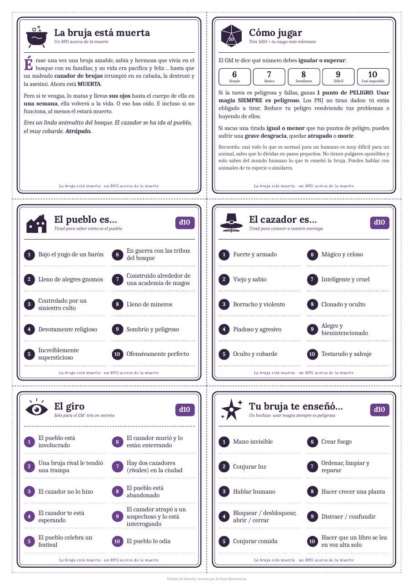
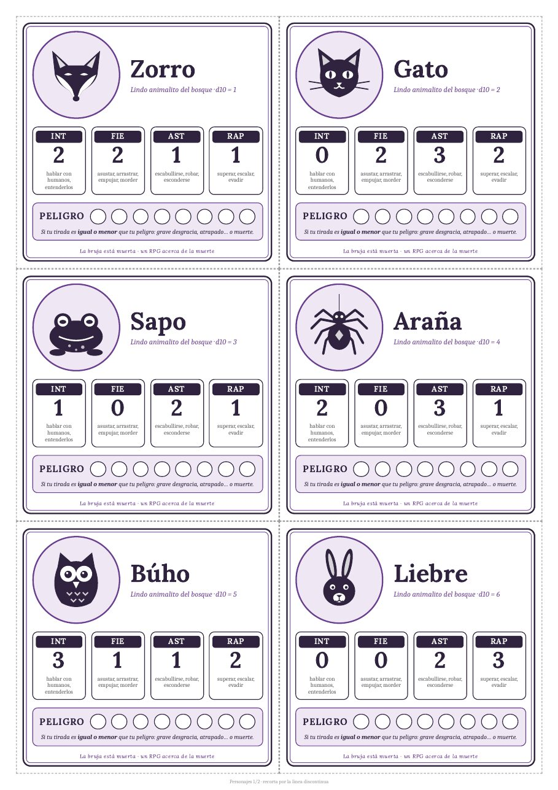
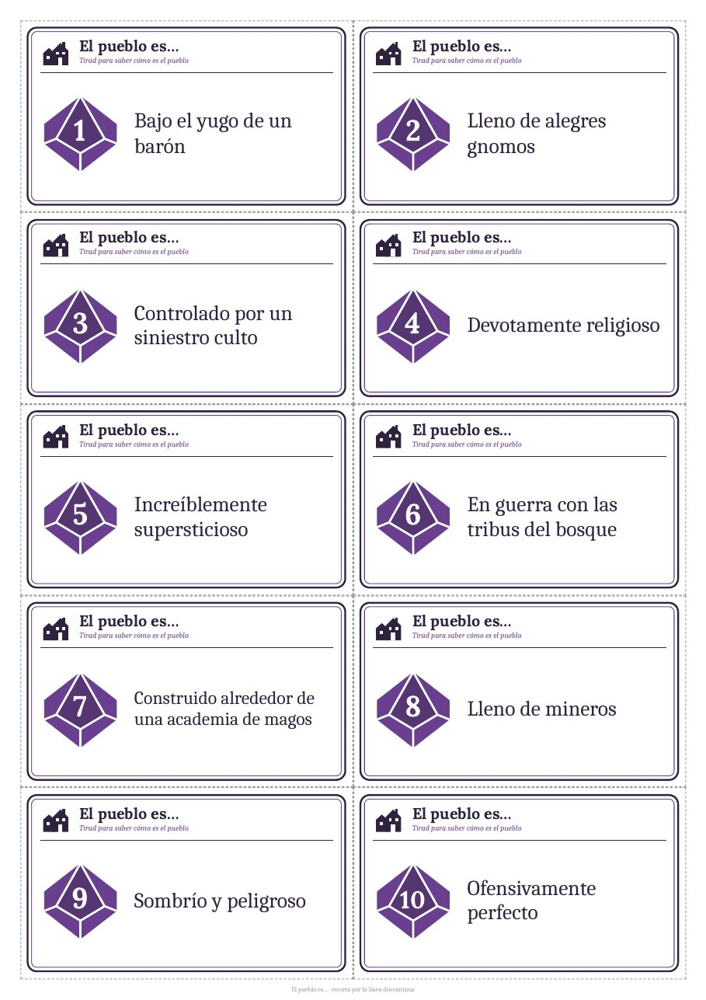
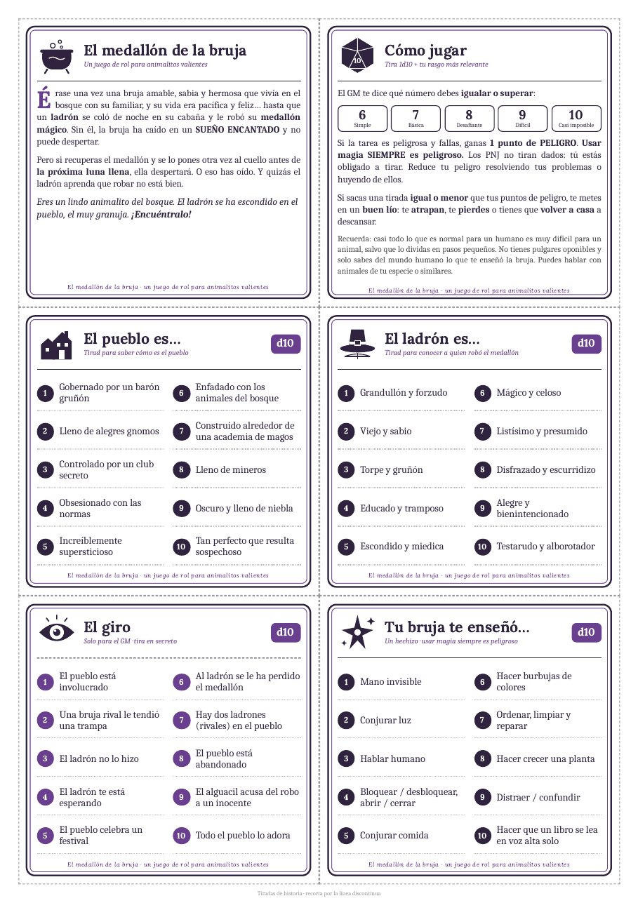

Paso 1
Elige tu animalito
Tira un d10 o escoge una especie. Cada una tiene puntos en inteligencia, fiereza, astucia y rapidez.
Rol de una página · en castellano
¿Piensas que todos los juegos de rol exigen horas de preparación y una buena inversión? Aquí basta con una hoja de reglas, un dado de diez caras y unas tarjetas que imprimes en casa. Esta misma tarde podéis estar jugando.



La historia
Vivía en el bosque con su familiar, y su vida era pacífica y feliz… hasta que un malvado cazador de brujas irrumpió en su cabaña, la destrozó y la asesinó. Ahora está muerta.
Pero si te vengas, lo matas y llevas sus ojos hasta el cuerpo de ella en una semana, ella volverá a la vida. O eso has oído. E incluso si no funciona, al menos él estará muerto.
Eres un lindo animalito del bosque. El cazador se ha ido al pueblo, el muy cobarde. Atrápalo.
Cada especie tiene su ficha ilustrada con sus cuatro rasgos: inteligencia, fiereza, astucia y rapidez.
Una hoja de reglas, un dado y unos amigos.
Todo lo demás lo pone vuestra imaginación.
El juego y su autor
The Witch is Dead es un juego de rol de Grant Howitt, diseñador británico conocido por sus juegos de una página como Honey Heist y por obras más grandes como Spire. Con una sola hoja consiguió una historia llena de humor, ternura y venganza que se explica en un minuto.
Una persona hace de GM y describe el pueblo; el resto juega como animalitos del bosque que no tienen pulgares y solo saben del mundo humano lo que les enseñó la bruja. No hay que leer manuales ni preparar nada: unas tiradas al empezar y la partida arranca sola.
El autor lo comparte en su página de itch.io con la modalidad paga lo que quieras. Si te gusta, apoya su trabajo.
Tira un d10 o escoge una especie. Cada una tiene puntos en inteligencia, fiereza, astucia y rapidez.
Tirad cómo es el pueblo, cómo es el cazador y qué hechizo os enseñó la bruja. El GM tira en secreto el giro.
Tira 1d10 más tu rasgo contra una dificultad de 6 a 10. Si fallas algo peligroso, sumas peligro. Usar magia siempre es peligroso.
La traducción
Los textos de las tarjetas parten de La bruja está muerta, la traducción al castellano que circula entre aficionados al rol. El documento de origen no indica quién la hizo, pero gracias a esa persona el juego llegó a muchas mesas en nuestro idioma.
Para este proyecto se repasó con cuidado: se corrigieron erratas, tildes y concordancias, y se ajustó la redacción para que cada texto quepa en su tarjeta sin perder el tono del original.
Si tú hiciste la traducción, escríbeme por las incidencias del repositorio y añadiré tu nombre con mucho gusto.
Texto de origen
…y tu vida era pacifica y feliz hasta que un malévolo cazador de brujas irrumpió en su cabaña la destrozo y la asesino, asesinó ahora ella esta MUERTA.
En las tarjetas
…y su vida era pacífica y feliz… hasta que un malvado cazador de brujas irrumpió en su cabaña, la destrozó y la asesinó. Ahora está MUERTA.
El proyecto
La hoja original es perfecta para leer, pero incómoda en la mesa. Este proyecto la convierte en un mazo de tarjetas A4 recortables, diseñado tarjeta a tarjeta para que la partida fluya sin consultar nada.
Rejillas de 2×3, 2×5 y 2×6 tarjetas por hoja A4, con línea discontinua de corte y un marco que deja margen al recortar.
Con la edición reutilizable no se escribe en las fichas: la tirada inicial se resuelve colocando la tarjeta de resultado junto al personaje.
El medallón de la bruja adapta la historia para jugar desde los 7 años: un ladrón roba el medallón y nadie muere. Las reglas no cambian.
Las fuentes Lora y Caladea van incrustadas en el PDF. Lo que ves en pantalla es exactamente lo que sale de la impresora.
Un script en Python construye cada hoja y GitHub Actions publica los PDF en cada versión, siempre a partir del mismo código.
El diseño, las ilustraciones y el código se publican con licencia CC BY‑SA 4.0. Puedes crear tus propias variantes.
Descargas
Cada edición trae dos PDF. Los dos incluyen la hoja de historia, reglas y tablas, y las diez fichas más dos en blanco.
La historia original: venganza, humor negro y animalitos adorables.
Para jugar con peques desde 7 años: un rescate mágico donde nadie muere.

Personaliza
¿Quieres más copias de las tablas, otro diseño de ficha o solo los personajes? Clona el repositorio y genera el mazo a tu medida en tu ordenador. No necesitas conexión a internet para crear el PDF.
Necesitas Python 3.10 o superior y Google Chrome. Si no tienes Chrome, ejecuta también .venv/bin/playwright install chromium.
git clone https://github.com/ojgarciab/la-bruja-esta-muerta.git
cd la-bruja-esta-muertaPara la edición infantil, cambia de rama con git switch versión-infantil.
python3 -m venv .venv
.venv/bin/pip install -r requirements.txt.venv/bin/python generar.pyObtienes tarjetas.pdf con 7 hojas A4. Combina estas opciones para personalizarlo:
| Opción | Resultado |
|---|---|
--sin-resultados | Solo reglas, tablas y personajes, en 3 hojas |
--resultados | Tarjetas de resultados a media altura, 12 por hoja |
--media --copias 3 | Las cuatro tablas a media altura y repetidas: una hoja de tablas para cada jugador |
--catalogo | Un PDF con todos los diseños disponibles para compararlos |
--publicacion | Los mismos PDF que se publican en cada versión, en la carpeta dist |
--sin-pdf | Solo el HTML, para revisarlo en el navegador |
También puedes montar tu propio documento desde Python eligiendo tarjeta a tarjeta. Lo tienes explicado en el README del repositorio.
Preguntas frecuentes